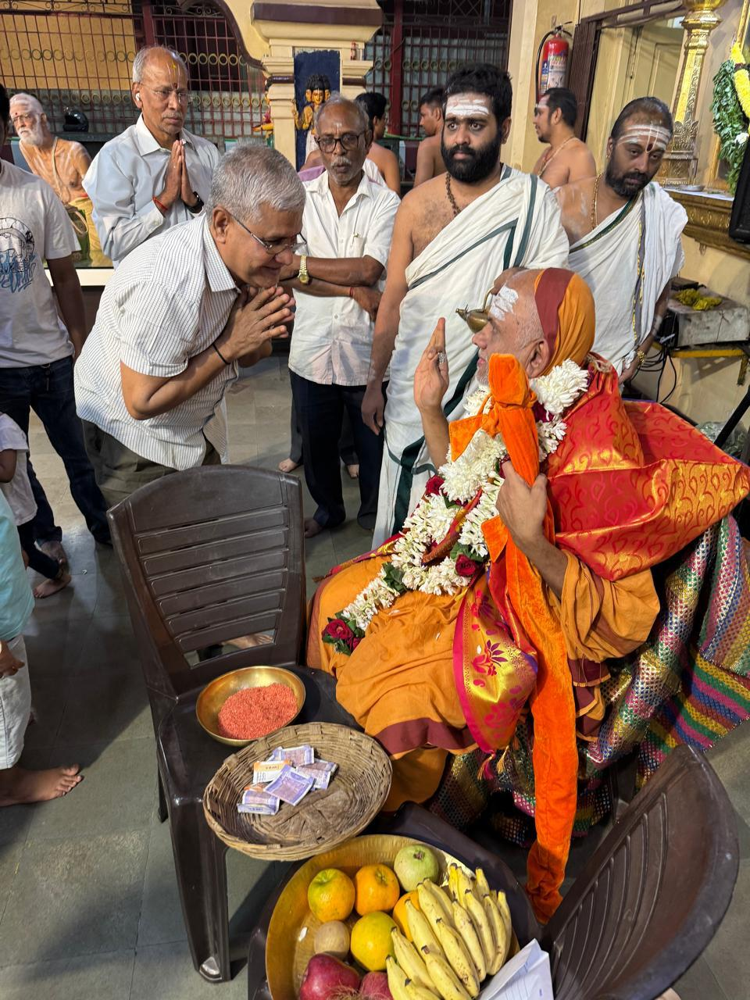
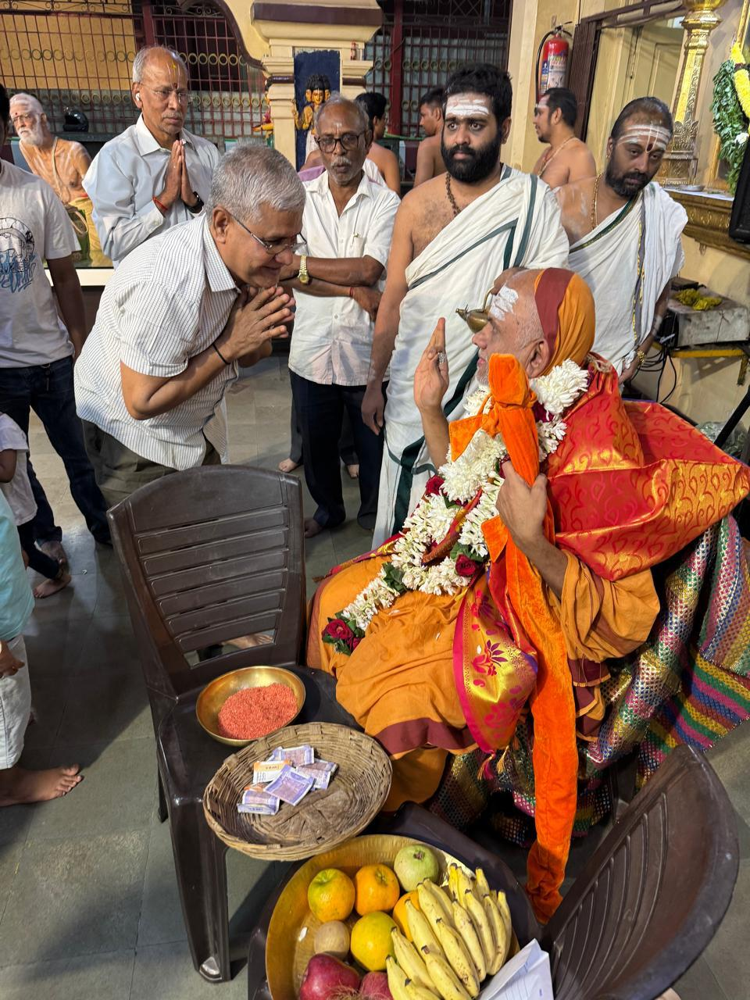
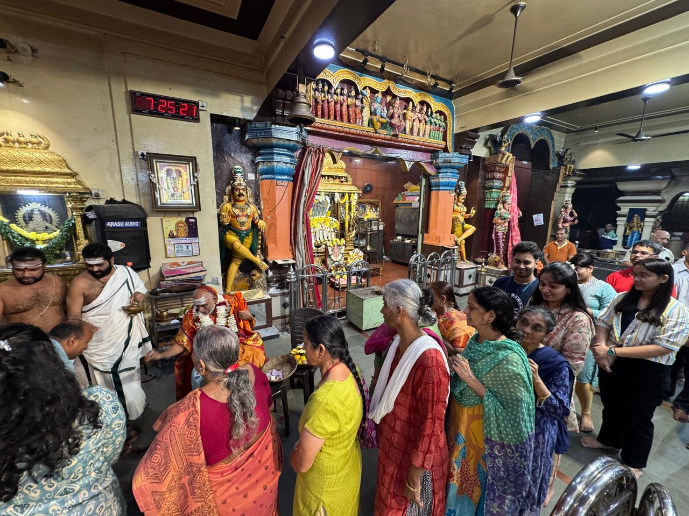
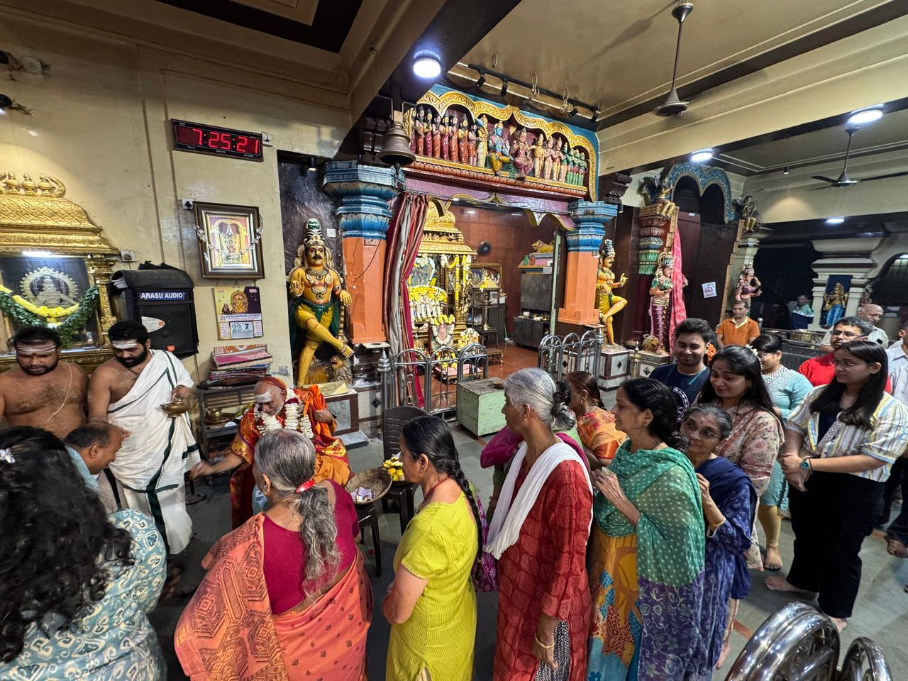

The South Indian Bhajan Samaj Matunga Visit
On December 22, 2024, Guhai Swamiji graced the famous South Indian Bhajan Samaj (SIBS) at Matunga, Mumbai with his divine presence. The visit began with a traditional Poornakumbha welcome, symbolizing the highest form of respect and devotion.
During his visit, Swamiji performed special pujas and aarti to the main deities - Lord Rama and Sri Rajarajeshwari. The atmosphere was filled with divine energy as devotees gathered to receive his blessings. Swamiji also delivered an Anugraha Bhashanam (blessed discourse), sharing spiritual wisdom with the assembled devotees.
 

 
